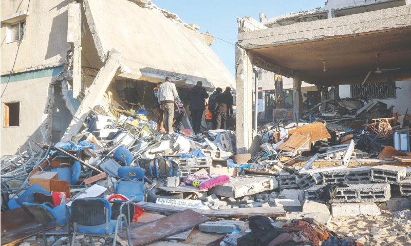

22 killed in Israeli strikes on Gaza
CAIRO: At least 22 Palestinians were killed in Israeli air strikes in Gaza on Saturday, medics said, while the Israeli military claimed it targeted gunmen operating from shelters and aid storages.
CAIRO: At least 22 Palestinians were killed in Israeli air strikes in Gaza on Saturday, medics said, while the Israeli military claimed it targeted gunmen operating from shelters and aid storages. CAIRO: At least 22 Palestinians were killed in Israeli air strikes in Gaza on Saturday, medics said, while the Israeli military claimed it targeted gunmen operating from shelters and aid storages. At least 10 people were killed in an air strike near the municipality building in Deir Al-Balah in the central Gaza Strip where people gathered to receive aid, medics said. Casualties were being carried by foot, on rickshaws and private cars from the site of the attack to the hospital, medics said. The strike killed the head of the Hamas-run administrative committee in central Gaza, Diab Ali al-Jaru, a Hamas source said. The Israeli military said al-Jaru, who was also the mayor of Deir Al-Balah, was the target of the strike and that he had assisted Hamas fighters. Four more people were killed in a separate strike in the area.
Read MoreUpdated about an hour ago